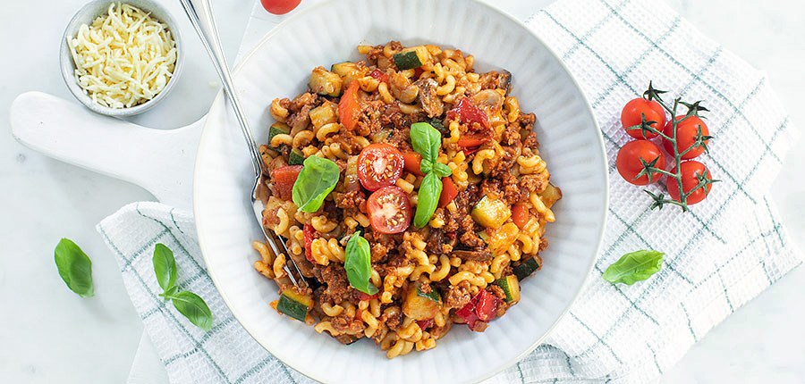

Macaroni
Terug

Dit is een Italiaanse klassieker en is niet meer weg te denken uit de Nederlandse keuken
Dus treuzel niet en haal de benodigdheden!
Het recept
- De benodigdheden
- 300 gr macaroni
- 1 courgette
- 250 gr champignons
- 1 rode paprika
- 2 theelepels Italiaanse kruiden
- 300 gr gehakt ( vegetarisch )
- 1 ui
- 2 tenen knoflook
- verse basilicum
- 125 gr cherrytomaatje
- 400 ml tomatensaus ( fritto )
- 2 eetlepels tomatenpuree
- olie ( om in te bakken )
- Snuf peper en zout
- 1 handje geraspte kaas
- Hak de ui en knoflook fijn.
Fruit deze in een pan met een klein beetje olie aan.
- Snijd de paprika in kleine blokjes en bak ook even mee.
Voeg het gehakt toe en bak dit aan.
- Snijd de courgette in blokjes en de champignons in plakjes.
Voeg beide toe aan de pan, breng het mengsel op smaak met peper, zout, wat blaadjes verse basilicum en de Italiaanse kruiden en bak alles nog een minuut of 8.
- Kook ondertussen de macaroni gaar en laat vervolgens uitlekken.
- Roer de tomatenpuree door het gehakt en groente mengsel en doe daarna ook de tomatensaus erbij.
Snijd de cherry tomaten in stukjes en voeg als laatste toe.
Roer alles goed door elkaar laat nog een paar minuutjes pruttelen.
- Je kunt de macaroni en saus los serveren van elkaar of door elkaar mengen.
Serveer met wat geraspte kaas en verse basilicum.
Variatietip
- Houd je van pittig voeg dan wat pepers toe.
- Ook goed te bereiden met vega gehakt.